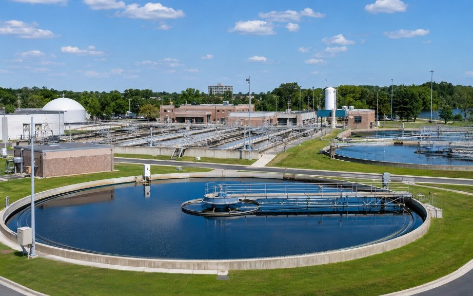

Whole-Home Water Filtration Services
Improve water quality throughout your entire home with filtration systems designed to reduce unwanted contaminants, odors, sediment, and common water concerns from every tap.
Explore serviceCapital Water Co. provides professional water filtration installation in Port Allen, LA. Across the river from Baton Rouge, we install whole-house water filtration, reverse osmosis, and water treatment systems so west-bank homeowners are not left to piece equipment together.
West-bank installation
Same company, west of the river
Serving Port Allen, LA and surrounding communities.
OUR SERVICES • COMPREHENSIVE WATER FILTRATION SOLUTIONS
These are the whole-house, reverse osmosis, and treatment systems Capital Water Co. installs for Port Allen properties.
Improve water quality throughout your entire home with filtration systems designed to reduce unwanted contaminants, odors, sediment, and common water concerns from every tap.
Explore service
Enjoy cleaner, better-tasting drinking water with advanced reverse osmosis systems that provide high-quality water for drinking, cooking, coffee, ice, and everyday use.
Explore service
Treat private well water concerns such as iron, sulfur odors, sediment, staining, and mineral issues with customized solutions built around your property’s water source.
Explore service
Reduce hard water minerals that can cause buildup on fixtures, dry skin, dull laundry, and strain on plumbing and appliances with a professionally installed water softener system.
Explore service
Improve taste and odor by reducing chlorine, chloramine, and other common water concerns with carbon filtration systems designed for fresher, cleaner water.
Explore service
Improve municipal water quality with treatment systems designed to reduce chlorine taste, odors, sediment, and other common city water concerns found in local homes.
Explore serviceFREQUENTLY ASKED ・ ANSWERS TO YOUR QUESTIONS
What to expect if you schedule water filtration installation in Port Allen.
Yes. City water treatment and well water treatment are both services we offer. The install follows your supply.
Sometimes, if freeze protection and service access are acceptable. Many Port Allen installs still land in a garage or utility area.
Use Get A Free Consultation on this page or call. We will review the house and recommend what to install.
SERVICE AREA
Capital Water Co. installs water filtration systems in Port Allen, Brusly, Addis, and Erwinville. Request a free consultation for a west-bank home visit.
Request a free consultation to talk through water filtration installation for your home.